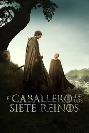
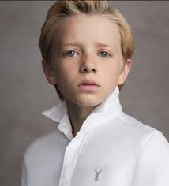
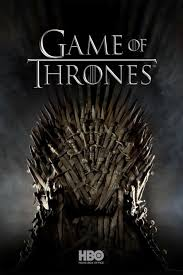
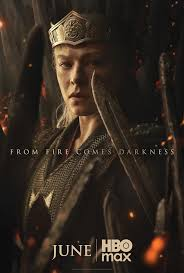
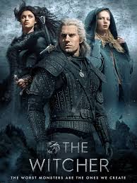
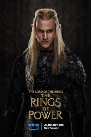
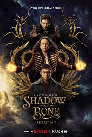

EL CABALLERO DE LOS SIETE REINOS
Un siglo antes de Juego de tronos, Ser Duncan el Alto y su escudero, Egg, recorren Poniente mientras la dinastía Targaryen gobierna el Trono de Hierro y los dragones aún son recordados. Grandes destinos y enemigos aguardan a estos amigos.
- Género: Acción, Aventura, Drama y Fantasía
- Año: 2026
- Duración: 1 temporada
- Director: Owen Harris, Sarah Adina Smith y Andrea Harkin
- Productores/as: Layla Blackman
- Calificación general: 8.7/10
- Clasificación por edad: +18
- Plataformas: HBO+
Tráiler
REPARTO
PETER CLAFFEY

DEXTER SOL ANSELL
FINN BENNETT
SAM SPRUELL
DANIEL INGS
RESEÑAS DESTACADAS
Calificación: 9.0 / 10

FantasyLover92 dice:
Una adaptación fiel y emocionante.
"La serie logra capturar la esencia de los relatos de George R.R. Martin. Los escenarios medievales y la ambientación transmiten autenticidad, mientras que los personajes principales tienen un desarrollo sólido. Una propuesta que emociona a los fans de Westeros."
Calificación: 7.0 / 10
MedievalCritic21 dice:
Entretenida, pero con clichés.
"La historia es atractiva, aunque algunos episodios caen en fórmulas ya vistas en otras series de fantasía. Aun así, la química entre Dunk y Egg funciona muy bien y mantiene el interés."
Calificación: 8.0 / 10
WesterosFan dice:
Un regreso al mundo de Westeros.
"Lo que más me gustó fue cómo la serie muestra los orígenes de la Casa Targaryen y la relación entre caballero y escudero. La acción es sólida y el tono más ligero contrasta con *Game of Thrones*."
Calificación: 7.0 / 10
CineGeek dice:
Gran ambientación, pero ritmo irregular.
"Los escenarios y vestuarios son espectaculares, transmiten la atmósfera medieval de Westeros. Sin embargo, el ritmo narrativo decae en algunos capítulos. El final compensa con un clímax emocionante."
Calificación: 6.0 / 10
DragonFan dice:
Un inicio prometedor, pero irregular.
"El carisma de los protagonistas sostiene la serie, pero la trama principal se siente algo floja y repetitiva. Los efectos visuales son buenos, aunque esperaba mayor intensidad en las batallas. Aun así, es disfrutable para los fans."
RELACIONADOS

GAME OF THRONES
Calificación: 9.2/10
DURACION: 8 temporadas

HOUSE OF THE DRAGON
Calificación: 8.5/10
DURACION: 2 temporadas

THE WITCHER
Calificación: 7.9/10
DURACION: 3 temporadas

THE LORD OF THE RINGS: THE RINGS OF POWER
Calificación: 7.0/10
DURACION: 1 temporada
